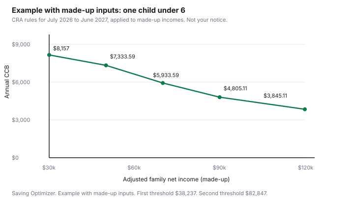

Kids · Canada
Canada Child Benefit 2026-27: How Much You Get and Why Your Payment Changed in July
A Canada Child Benefit deposit that shrinks in July is usually the annual recalculation, not a missed form. For July 2026 to June 2027, the Canada Revenue Agency uses your 2025 adjusted family net income, the ages of the children, and how many children you have. This guide quotes the maximums and the reduction rules from the CRA's "how much you can get" page, checked 29 September 2026. It does not produce a calculator result for your family. Use the CRA's child and family benefits calculator for that. This is not tax advice.
Key takeaways
- If adjusted family net income is under $38,237, the maximum is $8,157 a year ($679.75 a month) for each child under 6, and $6,883 a year ($573.58 a month) for each child aged 6 to 17.
- July 2026 to June 2027 is calculated from 2025 income. Income you earn in 2026 shows up in the July 2027 payment year.
- The reduction percentage depends on how many eligible children you have. The CRA page states the rates. A second threshold starts above $82,847.
- You and your spouse or common-law partner each have to file a return every year to keep the benefit, even with no income. T4114 says so.
- The Child Disability Benefit can be added if the child is eligible for the disability tax credit. The CRA page says up to $3,480 ($290 a month) for July 2026 to June 2027.
The July 2026 to June 2027 maximums: $8,157 under 6 and $6,883 aged 6 to 17
The CRA's how-much page says the CCB is not taxable and is not reported as income on your return. For the payment period from July 2026 to June 2027, based on 2025 adjusted family net income, the maximum for each child under 6 is $8,157 per year, which is $679.75 per month.
The maximum for each child aged 6 to 17 is $6,883 per year, which is $573.58 per month. You get that maximum for each eligible child when adjusted family net income is under $38,237. There is no reduction at that income.
The same page says payments start to decrease when adjusted family net income is over $38,237. From there up to $82,847, the benefit is reduced by a percentage of income above $38,237. Above $82,847, the reduction is a fixed amount plus a percentage of income above $82,847. Both the percentage and the fixed amount depend on the number of eligible children. The CRA states them as follows, for the total payment, not per child. One child: 7 percent of income over $38,237, and above $82,847 a reduction of $3,123 plus 3.2 percent of income over $82,847. Two children: 13.5 percent, then $6,022 plus 5.7 percent. Three children: 19 percent, then $8,476 plus 8 percent. Four or more children: 23 percent, then $10,260 plus 9.5 percent. The CRA's own examples on that page are Martha at $45,000 with one child under 6 ($7,683.59 for the year), and Martha at $100,000 ($4,485.11). Those are the CRA's examples. They are not a result for a different income.
| Item | Figure on the CRA page |
|---|---|
| Child under 6, maximum | $8,157 a year, $679.75 a month |
| Child aged 6 to 17, maximum | $6,883 a year, $573.58 a month |
| Adjusted family net income for the full amount | Under $38,237. No reduction. |
| First reduction band | Over $38,237 up to $82,847. Percentage of income over $38,237: 7, 13.5, 19, or 23 percent by number of children. |
| Second threshold | Over $82,847. Fixed amount plus a further percentage, as stated above, by number of children. |

Example with made-up inputs, one child under 6, using only those rules. At $30,000, income is under $38,237, so the payment is the maximum, $8,157. At $50,000, income over the first threshold is $11,763. Seven percent of $11,763 is $823.41. $8,157 minus $823.41 is $7,333.59. At $70,000, income over the threshold is $31,763. Seven percent is $2,223.41. $8,157 minus $2,223.41 is $5,933.59. At $90,000, the income is over $82,847 by $7,153. The CRA's worked examples take the percentage to the cent by dropping the extra fraction of a cent. 3.2 percent of $7,153 is $228.89 on that basis, plus the fixed $3,123, which is $3,351.89. $8,157 minus $3,351.89 is $4,805.11. At $120,000, income over $82,847 is $37,153. 3.2 percent is $1,188.89 on the same basis, plus $3,123, which is $4,311.89. $8,157 minus $4,311.89 is $3,845.11. If your income is not one of these, use the CRA calculator. Do not scale this chart.
How adjusted family net income from 2025 sets your payment
The CRA defines adjusted family net income as family net income minus Universal Child Care Benefit and registered disability savings plan income, plus UCCB and RDSP amounts you repaid. Family net income is line 23600 of your return plus line 23600 of your spouse's or common-law partner's return.
The UCCB and RDSP lines the page names are 11700 and 12500 for income received, and 21300 and 23200 for amounts repaid. A child's own net income is not part of family net income. T4114 says that directly.
The base year for July 2026 to June 2027 is 2025. A raise you received in 2026 does not change this benefit year. It is part of the calculation that starts in July 2027, once the 2026 return is assessed. That lag is why a household can feel the benefit "should" have dropped already, or "should" have risen, and the deposit has not moved. The CRA also says the CCB is indexed to inflation, and that amounts are recalculated every July.
An RRSP deduction changes line 23600, which changes adjusted family net income, which can change a later CCB year. The timing of contributions is the RRSP and TFSA guide. This page does not tell you to contribute in order to raise the benefit. Confirm any effect with the CRA. An RESP contribution is not a deduction that lowers line 23600 in the same way. The grant on an RESP is the CESG guide, and the Canada Learning Bond, which does not require a contribution, is the learning bond guide.
Why payments change in July and when a child turns 6
July is the month the new income year takes over. The CRA's page also gives birthday examples for this payment period.
A child born in March 2027: you are eligible in April 2027, or the month after you become eligible. A child turning 6 in March 2027: the under-6 rate applies for March, and the 6-to-17 rate applies for April 2027. A child turning 18 in December 2026: the last payment is December 2026, at the 6-to-17 rate. The under-6 maximum and the 6-to-17 maximum differ by $1,274 a year before any income reduction ($8,157 minus $6,883). After a reduction, the dollar change is smaller, because the reduction applies to the total. Read the notice for the month of the birthday rather than guessing the drop.
| What changed | What the CRA material says |
|---|---|
| Income year used | July 2026 to June 2027 uses 2025 adjusted family net income. A 2026 income change waits until the next July. |
| Child turning 6 | The CRA's March 2027 example pays the under-6 rate for the birthday month and the 6-to-17 rate the next month. |
| Custody change | Shared custody: each parent gets 50 percent of what they would have received with full custody, using their own adjusted family net income. The CRA says it will not split by another percentage. |
| Unfiled return | T4114: you and your spouse or common-law partner each have to file every year to continue getting the CCB, even with no income. |
| Provincial and territorial add-ons | Some are combined with the CCB payment and some are paid separately. A change in a provincial amount can change the deposit. Open your province's CRA page. |
Provincial and territorial add-ons paid with the CCB
The CRA says you may receive additional benefits when you apply for the CCB, including the child disability benefit and related provincial and territorial programs. The CRA administers child benefit programs for provinces and territories.
Some amounts are combined into the monthly CCB payment. Others are paid separately. The how-much page links a page for each province and territory. This guide does not quote those provincial amounts. Open the page for where you live, because a combined deposit is not "the CCB" alone.
If your child is eligible for the disability tax credit, the CRA says it calculates the child disability benefit and adds it to the CCB. For July 2026 to June 2027, the how-much page says you could get up to $3,480, which is $290 a month, for each child eligible for the disability tax credit. The CRA's CDB guideline table for the same period, 2025 base year, shows $290 a month for one eligible dependant, $580 for two, and $870 for three, when adjusted family net income is under $82,847. The table continues at higher incomes. Use that table rather than a guess past the first row. The disability tax credit itself is a separate claim. The tax-credits checklist points at the credit. It does not replace the CRA form.
Keeping payments flowing: file both returns, report changes
T4114, for July 2026 to June 2027, says that to continue getting the CCB, you and your spouse or common-law partner each have to file tax returns every year, even if you have not received income. A year with no income is still a year that needs a return. If either return is missing, the payment can stop. File both, then check direct deposit in CRA My Account so a restarted payment does not arrive as a cheque to an old address.
Report changes in the number of children, marital status, and custody. T4114 defines separated as living apart because of a breakdown for at least 90 days, and it says you are still considered to have a spouse if the separation is involuntary, such as work, school, health, or incarceration. Shared custody, on the how-much page, is 50 percent each, calculated on each parent's own adjusted family net income. Tell the CRA when the living arrangement changes. If you live in Quebec, T4114 says the Quebec family allowance is applied for with Retraite Québec, not as a CRA add-on you invent on the federal form. A child born in Quebec is registered through that provincial process.
Using the CRA calculator instead of guessing
The CRA's child and family benefits calculator is the tool that applies the rules to your numbers, including children of different ages and a provincial amount. The chart on this page is an example with made-up inputs for one child under 6. It is not your notice. If the deposit does not match what you expected after you file, the CRA's page on reasons for stopped or changed payments is the next read, not a secondhand total from a group chat.
Child care fees are a different system. A lower daycare bill does not replace the CCB, and the CCB does not cap a centre's invoice. Ontario's cap and the national fee picture are on the Ontario child care guide and the $10-a-day guide.
Sources & date stamps
- CRA, Canada child benefit, how much you can get, checked 29 Sep 2026. July 2026 to June 2027 maximums $8,157 ($679.75) under 6 and $6,883 ($573.58) aged 6 to 17. Thresholds $38,237 and $82,847. Reduction rates and fixed amounts for one, two, three, and four or more children, as in the text. Birthday examples. Shared custody at 50 percent. CDB up to $3,480 ($290 a month). Calculator linked from that page. Not taxable.
- CRA, T4114, Canada child benefit, for July 2026 to June 2027, checked 29 Sep 2026. Base year 2025. Both spouses file every year, even with no income. Family net income excludes the child's net income. Separated means at least 90 days. Quebec family allowance through Retraite Québec.
- CRA, CDB guideline table, July 2026 to June 2027, 2025 base year, checked 29 Sep 2026. Under $82,847: $290, $580, and $870 a month for one, two, and three eligible dependants. Higher-income rows are on that table.
- The line chart uses made-up incomes and the CRA reduction rules. It is not a CRA calculator result.
Frequently asked questions
How much is the Canada Child Benefit for July 2026 to June 2027?
The CRA page says the maximum is $8,157 a year ($679.75 a month) for each child under 6, and $6,883 a year ($573.58 a month) for each child aged 6 to 17, when adjusted family net income is under $38,237. Above that, the payment is reduced. Use the CRA's child and family benefits calculator for your household. The chart on this page is an example with made-up inputs for one child.
Why did my CCB change in July?
Payments are recalculated every July using the previous year's adjusted family net income. July 2026 to June 2027 uses 2025 income. A child turning 6, a custody change, a return that was not filed, or a change in a provincial amount paid with the CCB can also change the deposit. Read the notice, and the CRA's page on stopped or changed payments, before you assume a mistake.
What income does the CRA use to calculate my CCB?
For July 2026 to June 2027, the CRA uses 2025 adjusted family net income. That starts from both spouses' line 23600, then subtracts UCCB and RDSP income and adds UCCB and RDSP amounts repaid, as the CRA page defines it. Income you earn in 2026 shows up in the July 2027 recalculation, not in this benefit year.
What happens to the CCB when my child turns 6?
The CRA's example says a child turning 6 in March 2027 is paid at the under-6 rate for March and at the 6-to-17 rate for April 2027. The under-6 maximum is $8,157 and the 6-to-17 maximum is $6,883 before any reduction for income. Check the notice for the birthday month rather than subtracting the full difference yourself.
Do both parents need to file taxes to get the CCB?
Yes. The CRA's T4114 says that to continue getting the CCB, you and your spouse or common-law partner each have to file a tax return every year, even with no income. A shared-custody parent receives 50 percent of what they would have received with full custody, based on their own adjusted family net income. File both returns.
Researched and drafted with AI assistance and fact-checked against official Canadian sources. How we create content.